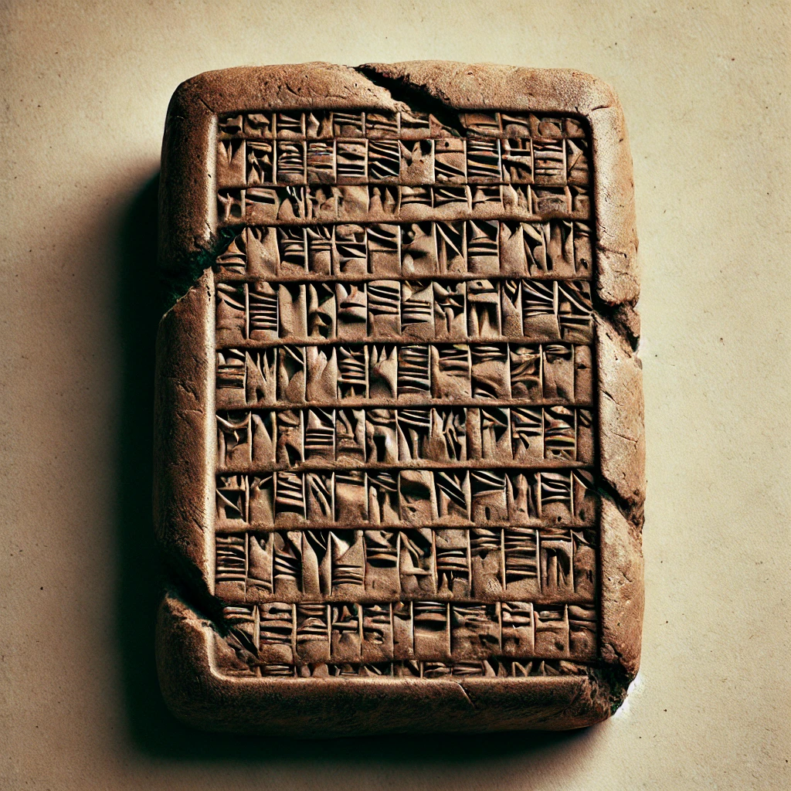
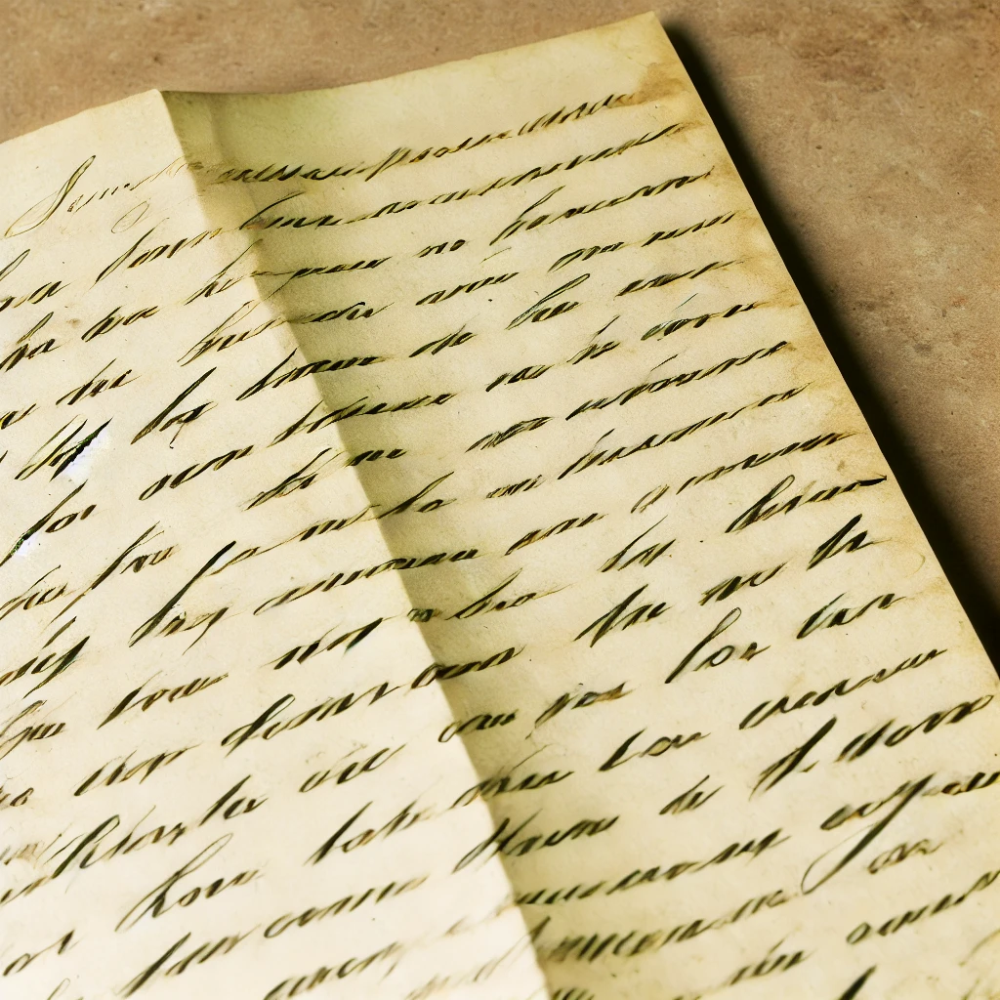
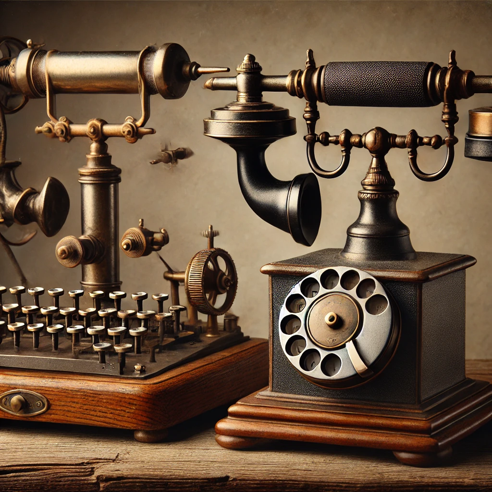
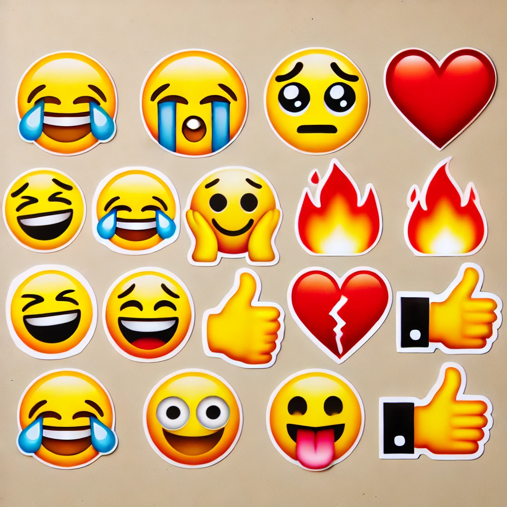

Since the dawn of civilization, communication has continuously evolved, transforming from ancient symbols and written letters to today’s quick taps on a screen. Each era brought new tools and methods that shaped how we connect with each other. Let’s journey through time and explore how humanity’s need to communicate has driven incredible innovations—from the quill to the smartphone.
In ancient civilizations, symbols were etched onto rocks, clay tablets, and cave walls. These early drawings and symbols evolved into more complex forms of writing, like Egyptian hieroglyphs and Mesopotamian cuneiform, allowing people to record history, tell stories, and communicate over long distances for the first time.
As civilizations advanced, so did their writing systems. The development of alphabets, like the Greek and Latin alphabets, laid the foundation for modern languages, making communication more accessible and efficient.
Written letters became the primary form of communication for centuries, allowing people to exchange ideas, share news, and build relationships across distances. With the establishment of postal systems, particularly in the Roman Empire, letters could be sent further and faster, fostering a more connected world.
This era also brought about innovations like the envelope and the stamp, which protected privacy and standardized postal charges. For centuries, letters allowed people to communicate in thoughtful, personal ways, capturing emotions and insights in ways that digital messages sometimes lack.
The invention of the telegraph in the 19th century was a game-changer. For the first time, people could send messages almost instantaneously across continents, using Morse code. This innovation laid the groundwork for the telephone, which further revolutionized communication by allowing people to hear each other's voices over vast distances.
Telegraphs and telephones brought immediacy to communication, transforming business, personal relationships, and even news reporting. No longer did people have to wait days or weeks to receive messages—connection was now only a wire away.
With the rise of the internet, communication became digital, opening up unprecedented possibilities. Emails allowed for rapid, paperless exchanges, while text messaging let people send quick, short messages from anywhere. Social media brought the world even closer together, making it possible to communicate with anyone, anywhere, instantly and visually.
This era saw the beginnings of the emoji—a simple way to convey emotion in digital text. Emojis, first invented in Japan in the late 1990s, began as basic icons and have since evolved into a universal language, representing emotions, actions, and objects in a single symbol.
Today, emojis are so widely recognized that they’ve become a language in their own right. With a single symbol, we can convey complex emotions and ideas—laughing, crying, celebrating, and more. Emojis add personality to digital text, bridging the gap created by the absence of non-verbal cues like facial expressions and tone of voice.
From the earliest symbols on cave walls to today’s emojis on our screens, each stage in the evolution of communication has responded to humanity's desire to connect in new, meaningful ways. As we look to the future, new technologies will undoubtedly shape our communication in ways we can’t yet imagine, but our need to connect remains constant.
The evolution of communication has brought us from carefully crafted letters to instantly shareable digital symbols. Each shift has allowed humanity to connect more closely and quickly, shaping how we understand and interact with each other. While emojis and digital messages may lack some of the depth of a handwritten letter, they bring us closer in a fast-paced, interconnected world.